My entire life has had one constant, my love for the animal kingdom
I always knew that my life had to have animals in it, there was no other option
My very first work position was a volunteer experience at a Small Breeds Farm and Owl park
And the love affair didn't end there.
Since then I have travelled the world, following my passion
Consuming every opportunity to be around and work with animals
When I studied my degree, I chose a speciality of Animal Psychology, and gained, through that, an even deeper connection
I had the opportunity, as part of my study, to travel to South Africa and work at a game reserve
This was really my very first experience of working with large and wild animals
And I haven't looked back since, focusing much of my time and energy on studying the animal kingdom
I now have qualifications in Advanced Animal Care, Animal Management and Animal Behaviour and Welfare
And some certifications from reputable schools around the world, including in Entomology and Ecology, to name but a few
As well as my qualifications I have had some amazing experiences within this sector
_________________________________________________________________________
One of my most treasured experienced, was at Shamwari Game Reserve, on the Eastern Cape of South Africa
I spent two months there, working alongside the game keeping team, and the veterinary team
I had the fortune of working in the rehabilitation centre, where we nursed animals back to health
And where we were able to rehabilitate a variety of animals back into the wild
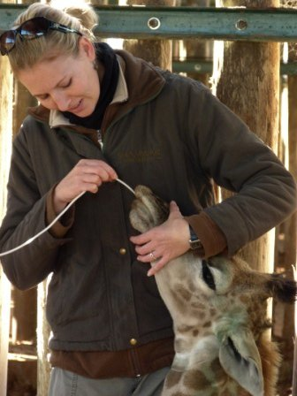
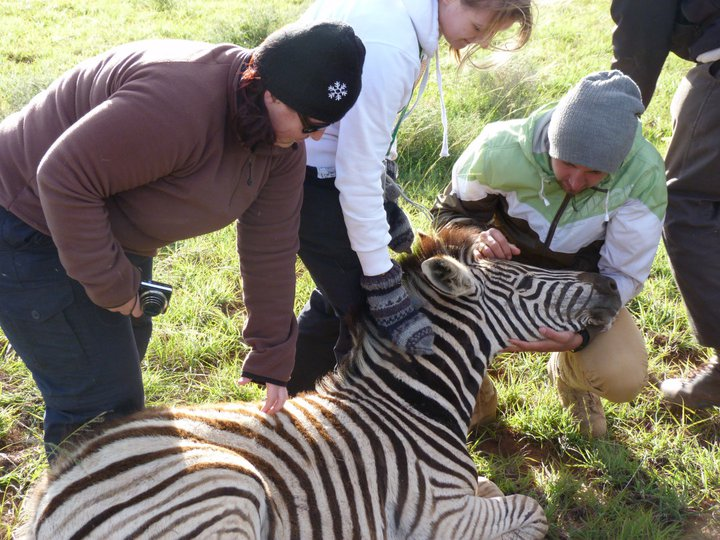
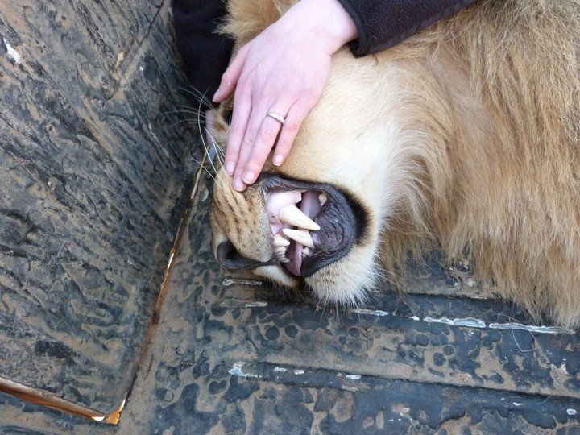
Using advanced tracking equiptment we were able to monitor animals
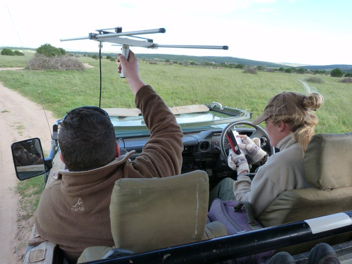
I was also able to get up close and personal with some of the animals, such as both Black and White Rhino, Zebra and even Lions
During my time there, we had a huge team operation to capture, tag and release Rhino as a part of anti-poaching efforts
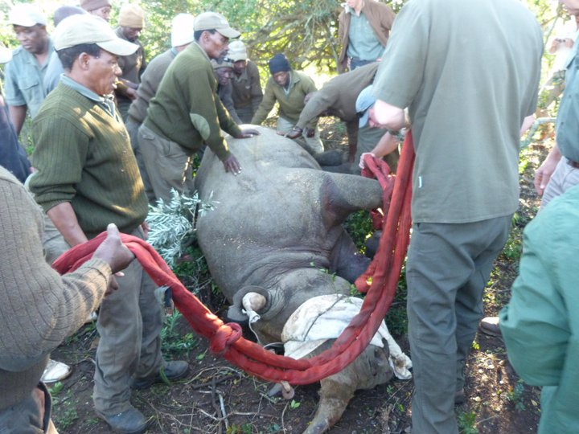
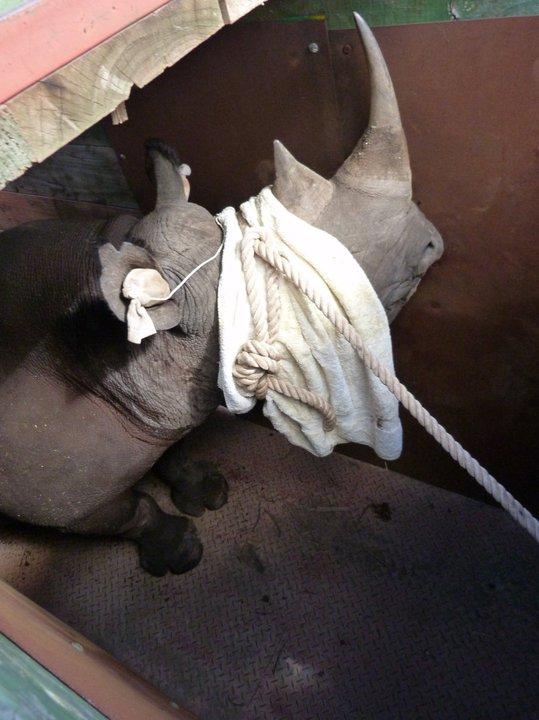
As well as these experiences, we had many others, including road fixing, alien plant species removal and other less glamorous, but entirely essential, jobs.
My time at Shamwari, I also had the opportunity to support some of the game drive staff and show guests around, resulting in some of the most amazing encounters
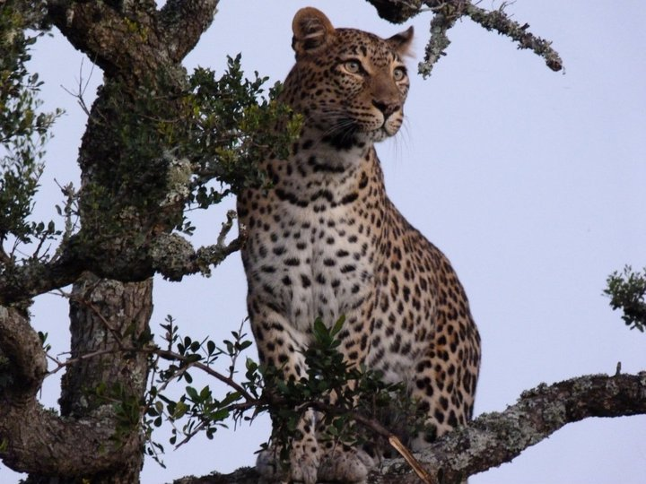
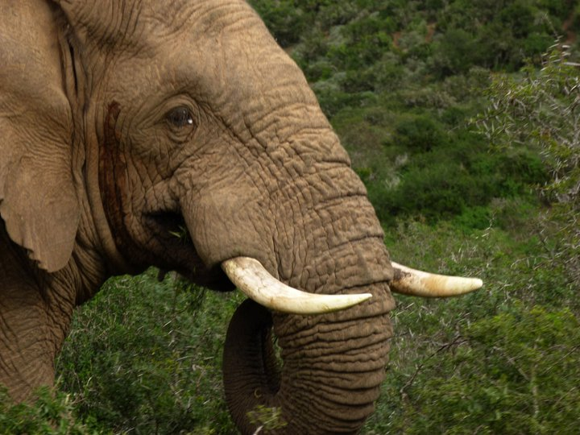
Not only that, but we were able to give back to some of the small communities around the reserve, with charitable donations and building work.
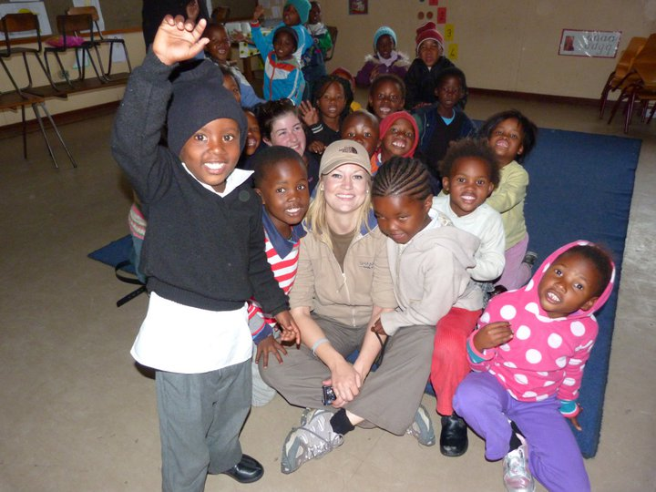
_________________________________________________________________________
During my time in Africa, I had the opportunity to do some work with the Born Free Foundation
They had a rescue and relocation programme, for big cats, with various health issues
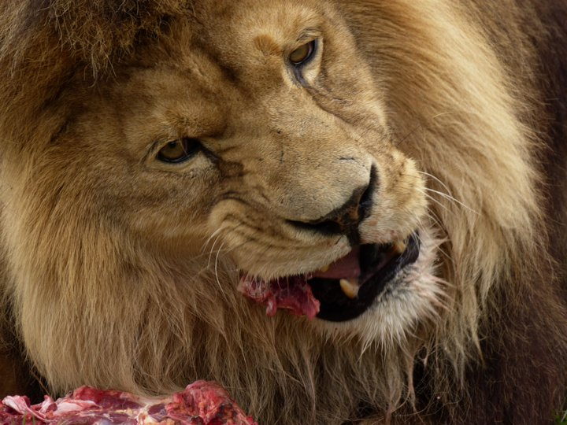
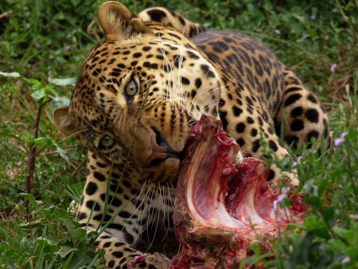
Some of the big cats had been so badly abused, that they had no chance of surviving in the wild
And so Born Free had rescued them and given them a home to live out their days
_________________________________________________________________________
In a way to enhance my skills and gain even more experience in rehabilitation, I arranged some time working at SANCCOB
A charity in Port Elizabeth, started to rescue and rehabilitate wild sea birds
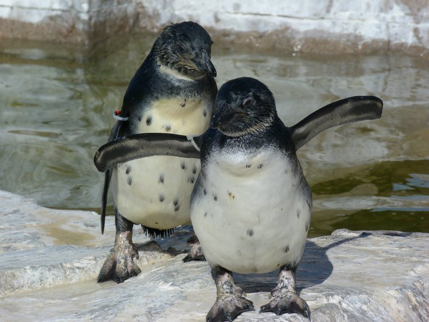
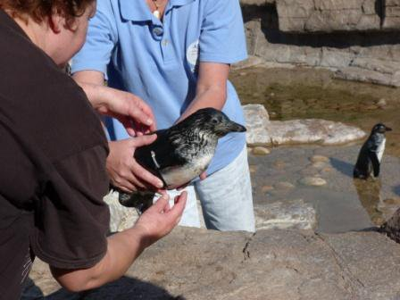
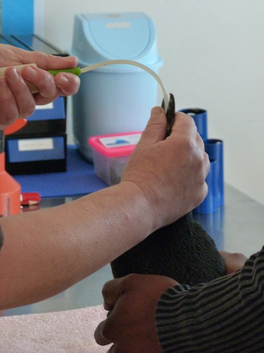
During my time at SANCCOB I assisted with rescuing penguin chicks from flood waters
Unfortunately they were too young to feed themselves so they had to be tube fed, to help them gain strength before release
_________________________________________________________________________
I am always aware of how fortunate I have been to have these experiences
As well as my time in Africa, I have also had time in America, teaching young people about animal husbandry
My love for animals continues, and seems to spill over into all aspects of my life, much to my partners chagrin
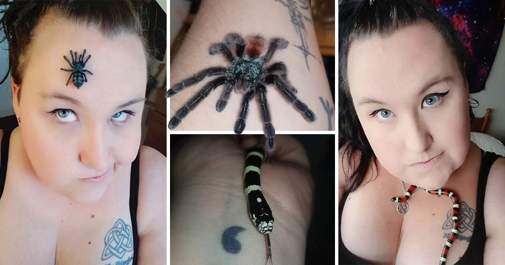
My ultimate dream would be to own some kind of wildlife rescue and rehabilitation
Or a Rare Breeds farm
But until that day, I suppose I will have to make do with the animals we already have.
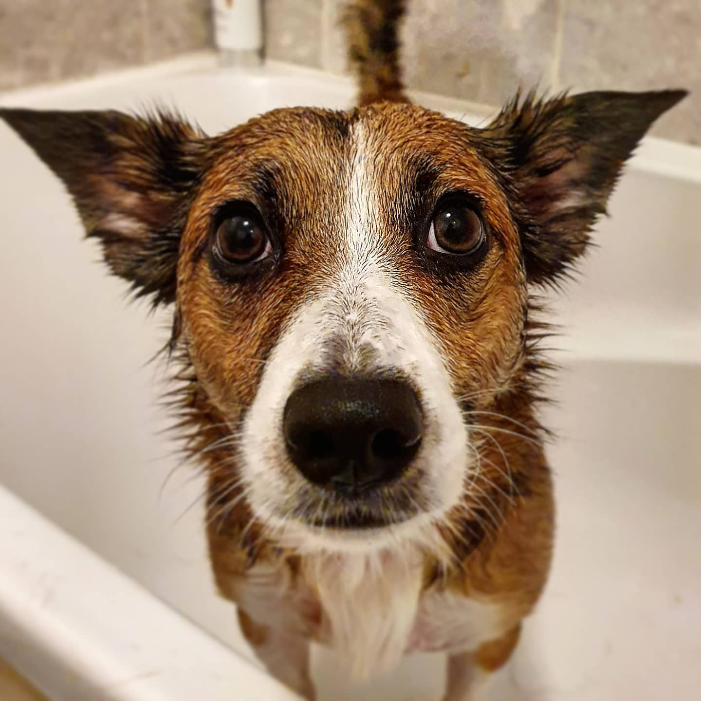
For a full list of my experiences and qualifications Click Here